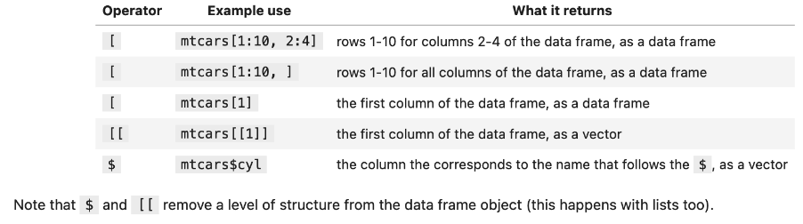
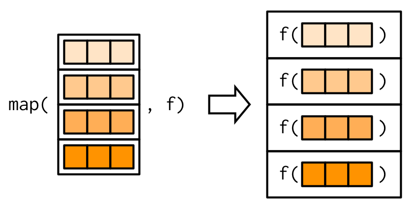

R Programming Cheatsheet
R Packages
Readr Package
read_csv(url): reads a csv fileread_csv(url, col_types = cols()): reads a csv file with no column typesread_csv(url, col_types = cols(col_name = col_type)): reads a csv file with column typesread_csv(url, skip = n, n_max = m): reads a csv file skipping n rows and reading m rows
read_csv2(url): reads a csv file with a comma as decimal separatorread_tsv(url): reads a tsv fileread_delim(url, delim = ""): reads a file with a delimiter
readxl Package
read_excel(file_path, sheet="name"): reads an excel file- to read url need to do
download.file(url, destfile = "file.xlsx", mode = "wb")
- to read url need to do
janitor Package
clean_names(df): cleans column names to match them with R conventions (e.g., col_name1)
dplyr Package
select(df, col_name1, col_name2): selects colsfilter(df, col_name1 == "value", col_name2 > 5): filters rowsfilter(df, col_name1 %in% c("value1", "value2")): filters if col_name1 is in a vector of values
arrange(df, col_name1): sorts rows, default is ascendingarrange(df, desc(col_name1)): sorts rows descending
mutate(df, new_col_name = col_name1 + col_name2): creates new colsslice(df, 1:10): selects rowsslice(df, 1): selects first row
pull(df, col_name1): extracts a column as a vector
stringr Package
str_detect(df$col_name, "value"): detects if a string contains a valuestr_subset(df$col_name, "value"): subsets a string if it contains a valuestr_split(df$col_name, "value"): splits a string by a valuestr_split_fixed(df$col_name, "value", n): splits a string by a value and returns n columns (gets character matrix)
separate(df, col_name, into = c("new_col_name1", "new_col_name2"), sep = "value"): separates a column into two columnsstr_length(df$col_name): gets length of stringstr_sub(df$col_name, start = n, end = m): gets substring from n to mstr_c(df$col_name1, df$col_name2, sep = "value"): concatenates two stringsstr_c(df$col_name1, sep = "value", collapse = "value"): concatenates vector of string and collapses them into one string
str_replace(df$col_name, "value", "new_value"): replaces a value in a string
forcats Package
fct_drop(df$col_name): drops unused levelsfct_infreq(df$col_name): orders levels by frequencyfct_reorder(df$col_name, df$col_name2): orders levels by another columnfct_relevel(df$col_name, "value"): moves a level to the frontfct_rev(df$col_name): reverses order of levels
tidyr Package
pivot_longer(df, cols = c(col_name1, col_name2), names_to = "new_col_name", values_to = "new_col_name"): pivots cols to rowspivot_wider(df, names_from = "col_name1", values_from = "col_name2"): pivots rows to cols
Tidy data
Criteria:
- Each row is a single observation
- Each variable is a single column
- Each value is a single cell
Assignment environment
we use <- to assign values to variables.
This is because when we do median(x <- c(1, 2, 3)) x is assigned to c(1, 2, 3) globally. 
Vectors
- objects that contain 1 or more elements of the same type
- elements are ordered
- Heirarchy for coercion: character > double > integer > logical
- to change type of vector use
as.character(),as.double(),as.integer(),as.logical() - to check if vector is of a certain type use
is.character(),is.double(),is.integer(),is.logical() - to check length of vector use
length() - to check type of vector use
typeof()
Can get vector from df using: df$col_name
Subsetting

name <- c("a", "b", "c")
name[1] # "a"
name[2:3] # "b" "c"
name[-1] # "b" "c"
name[length(name)] # "c"]
# Also...
x <- c(1, 2, 3)
y <- x
y[3] <- 4
y
#> [1] 1 2 4Tibbles vs Data Frames
Tibles inherit from data frames but are more strict. They are more consistent and have better printing.
Important properties:
- Tibbles only output first 10 rows and all columns that fit on screen
- when you subset a tibble you always get a tibble, in data frames you get a vector
Dates and Times
uses lubridate package
today(): gets today’s date, class is Datenow(): gets today’s date and time, class is POSIXctymd(), ydm(), mdy(), myd(), dmy(), dym(): converts character to dateymd_hms(): converts character to date and time- Can mutate date:
dates |> mutate = make_date(year, month, day) wdays(): gets day of weekwdays(date, label = TRUE): gets abbreviated day of week (e.g., Mon)wday(date, label = TRUE, abbr = FALSE): gets day of week as full name (e.g., Monday)
mdays(): gets day of monthydays(): gets day of year
Joining Data
bind_rows(df1, df2): binds rows of two dfsbind_cols(df1, df2): binds cols of two dfsinner_join(df1, df2, by = "col_name"): joins two dfs by col_name, only keeps rows that matchleft_join(df1, df2, by = "col_name"): joins two dfs by col_name, keeps all rows from df1semi_join(df1, df2, by = "col_name"): joins two dfs by col_name, keeps only column names from df1, only keeps rows that matchanti_join(df1, df2, by = "col_name"): joins two dfs by col_name, keeps only column names from df1, keeps only rows that don’t matchfull_join(df1, df2, by = "col_name"): joins two dfs by col_name, keeps all rows from both dfs
Change or Remove Specific Values
Selectively Change Values
case_when(): selectively modify column values based on conditions
gapminder |>
mutate(country = case_when(country == "Cambodia" ~ "Kingdom of Cambodia",
# only work if country is character (not factor)
TRUE ~ country))
# For multiple values
gapminder |>
mutate(continent = case_when(continent == "Asia" ~ "Asie",
continent == "Europe" ~ "L'Europe",
continent == "Africa" ~ "Afrique",
TRUE ~ continent)) #This is to keep the original value (not NA)Removing Rows with NAs
| Command | Description | Example |
|---|---|---|
drop_na() |
Remove rows based on NA in cols x to y | df %>% drop_na(x:y) |
| Remove rows if any column has NA | df %>% drop_na() |
Iterate over groups of rows
summarise()orsummarize(): returns a single value for each groupgroup_by(): groups rows by a column
# calculate the average life expectancy for the entire dataset
gapminder |>
summarise(mean_life_exp = mean(lifeExp))
# calculate the average life expectancy for each continent and year
gapminder |>
group_by(continent, year) |>
summarise(mean_life_exp = mean(lifeExp, na.rm = TRUE))
# na.rm = TRUE removes NAs from calculation
# does not collapse the data frame, compute with group
gapminder %>%
group_by(country) %>%
mutate(life_exp_gain = lifeExp - first(lifeExp)) %>%
# first() returns the first value of a vector
head()purrr Package

map(df, mean, na.rm = TRUE): retuirns a listna.rm = TRUEremoves NAs from calculation
map_dfc(df, median): returns a tibblemap_dbl(df, max): returns a double vector
Can use anonymous functions with map():
# Long form
map_*(data, function(arg) function_being_called(arg, other_arg))
# e.g.
map_df(data_entry, function(vect) str_replace(vect, pattern = "Cdn", replacement = "Canadian"))
# short form
map_*(data, ~ function_being_called(., other_arg))
# e.g.
map_df(data_entry, ~str_replace(., pattern = "Cdn", replacement = "Canadian"))Functions
- Has roxygen comments, same as python docstrings
#' Calculates the variance of a vector of numbers.
#'
#' Calculates the sample variance of data generated from a normal/Gaussian distribution,
#' omitting NA's in the data.
#'
#' @param data numeric vector of numbers whose length is > 1.
#'
#' @return numeric vector of length one, the variance.
#'
#' @examples
#' variance(c(1, 2, 3))
variance <- function(observations) {
if (!is.numeric(observations)) {
# Throws an error
stop("All inputs must be numeric.")
}
sum((observations - mean(observations)) ^ 2) / (length(observations) - 1)
}- Name Masking: if a variable is defined in the function, it will be used instead of the global variable
- if not in function, looks one level up, until it reaches the global environment
- R looks for values when the function is run, not when it is defined
- Each run is independent of the other
- Lazy Evaluation: R only evaluates the arguments that are needed
force()forces R to evaluate an argument
Testing with testthat
test_that("Message to print if test fails", expect_*(...))
test_that('variance expects a numeric vector', {
expect_error(variance(list(1, 2, 3)))
expect_error(variance(data.frame(1, 2, 3)))
expect_error(variance(c("one", "two", "three")))
})| Function | Description |
|---|---|
| expect_identical | Test two objects for being exactly equal |
| expect_equal | Compare R objects x and y testing ‘near equality’ (can set a tolerance) |
- expect_equal(x, y, tolerance = 0.00001) |
|
| expect_equivalent | Compare R objects x and y testing ‘near equality’ (can set a tolerance) and does not assess attributes |
| expect_error | Tests if an expression throws an error |
| expect_warning | Tests whether an expression outputs a warning |
| expect_output | Tests that print output matches a specified value |
| expect_true | Tests if the object returns TRUE |
| expect_false | Tests if the object returns FALSE |
Importing Packages or Scripts
| Command | Description |
|---|---|
source("path/to/script.R") |
Take functions from another script |
library(package_name) |
Import a package |
Anonymous Functions
(function(x) x + 1)(1) (see purrr package for examples)
Nested Data Frames
# create a nested data frame
by_country <- gapminder %>%
group_by(continent, country) %>%
nest() # turns all other columns into a column called data (list of data frames)Common workflow:
group_by()+nest()to create a nested data framemutate()+map()to add new columnsunnest()to return to a regular data frame
weather |>
# step 1
group_by(origin, month) |>
nest() |>
# step 2
mutate(min_temp = map_dbl(data, ~min(.$temp, na.rm = T)),
max_temp = map_dbl(data, ~max(.$temp, na.rm = T)),
avg_temp = map_dbl(data, ~mean(.$temp, na.rm = T)))
# step 3
unnest(avg_temp) # only unnest if we get some intermediate list-columns from mapAlternative to above code:
weather_nested_2 <- weather |>
group_by(origin, month) |>
summarise(min_temp = min(temp, na.rm = T),
max_temp = max(temp, na.rm = T),
avg_temp = mean(temp, na.rm = T))Tidy Evaluation
metaprogramming: writing code that writes code
With tidyverse, they have a feautre called “non-standard evaluation” (NSE). Part of this is data masking.
Data Masking: data frame is promised to be first argument (data mask)
- columns act as if they are variables,
filter(gapminder, country == "Canada", year == 1952) - checks dataframe first before global environment
- columns act as if they are variables,
Delay in Evaluation: expressions are captured and evaluated later
enquo(): quotes the argumentsym(): turns column name into a function as a string!!: unquotes the argument{{ arg_name }}: unquotes and quotes the argument:=: Walrus operator - needed when assigning values
# e.g.
filter_gap <- function(col, val) {
col <- enquo(col)
filter(gapminder, !!col == val)
}
# better way
filter_gap <- function(col, val) {
filter(gapminder, {{col}} == val)
}
filter_gap(country, "Canada")# e.g. of walrus operator
function(data, group, col, fun) {
data %>%
group_by({{ group }}) %>%
summarise( {{ col }} := fun({{ col }}))
}Passing dots
- if passing varibales to tidyverse functions, use
...- when variable not used in logical comparisons or variable assignment
- should be last argument in function
- can add multiple arguments
- when variable not used in logical comparisons or variable assignment
sort_gap <- function(x, ...) {
print(x + 1)
arrange(gapminder, ...)
}
sort_gap(1, year, continent, country)